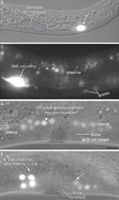
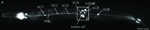

Figures
EggFIG 1 - DIC image of adult
hermaphrodite midbody region
EggFIG 2A-D - Uterus structure
EggFIG 2E-G - Uterus structure

EggFIG 3 - Electron micrographs
of the uterus
EggFIG 4A&B - Uterus
development
EggFIG 4C&D - Uterus
development
EggFIG 5A&B - Cell fate patterning
during uterus development
EggFIG 5C&D - Cell fate
patterning during uterus
development
EggFIG 6A&B - The adult vulva
EggFIG 6C-E - The adult vulva
EggFIG 7 - Vulval cell patterning
EggFIG 8 - Interactions between
the AC and cells of the
developing vulva
EggFIG 9 - Vulval morphogenesis
EggFIG 10 - Vulval morphology
before and after eversion
EggFIG 11A - The uterine muscles
EggFIG 11B&C -The uterine
muscles
Egg
FIG 12 - The vulval muscles
EggFIG 13 - Connectivity of the
vulval and uterine muscles
EggFIG 14A - Sex muscle
development

EggFIG 14B-E - Sex muscle
development

EggFIG 15A - Egg-laying neurons
EggFIG 15B&C - Egg-laying
neurons
EggFIG 16A - Egg-laying neurons
EggFIG 16B&C - Egg-laying
neurons
EggTABLE 1 - Cells of the adult
uterus
EggFIG Sup1 - Stages of vulval
development